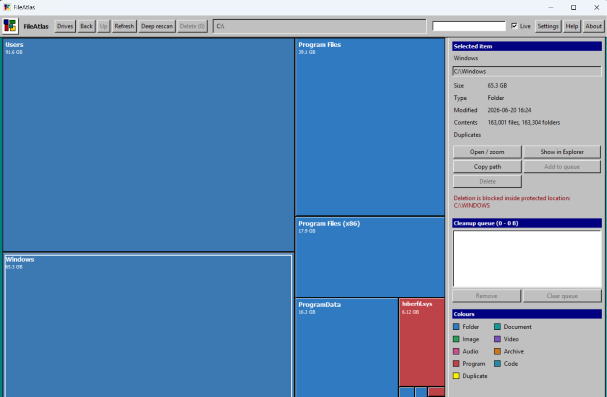
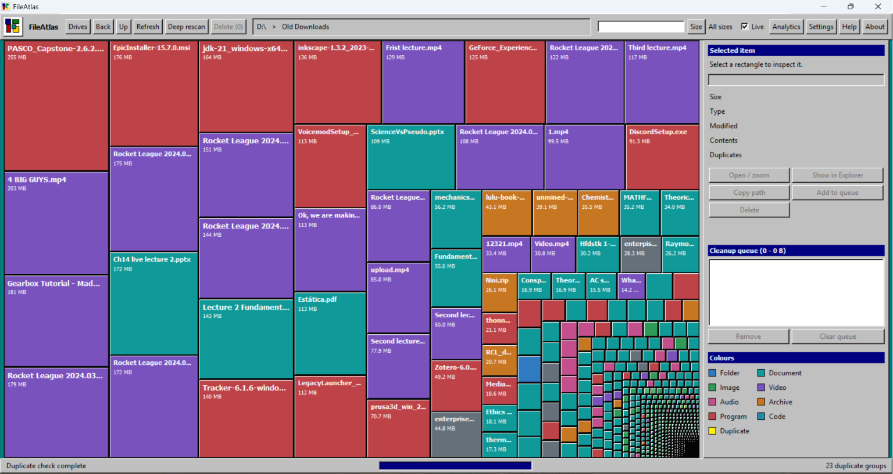

01 FileAtlas Base
Navigate large drives as a responsive treemap and move from volume to folder to file without running a new full scan for every question.

FileAtlas maps storage, records change history and brings recovery and behavioral protection into one Windows-native suite.

THE PLATFORM
Explore the drive, follow the history, inspect the evidence and recover what can be recovered.
Navigate large drives as a responsive treemap and move from volume to folder to file without running a new full scan for every question.

Record what appeared, disappeared, moved or changed — including activity that happened while the desktop app was closed.
Show recovery status per object: covered, partial, deferred, failed, excluded or unavailable.
Observe live mutation activity, attribute likely actors and contain destructive behavior without making recovery a prerequisite for detection.
Inspect catalog records, provenance, quality and subsystem state when an answer needs to be verified.
quality = exact source = fastore-catalog state = current generation = 42
REAL PRODUCT SCREENS
WHEN A SMALL CHANGE BECOMES AN INCIDENT
A missing key can block a finance portal. A moved configuration file can take production offline.
FileAtlas reduces the search from every machine and server to the object, event trail and recovery state that matter.
UPCOMING · SCENENET 3.0 DEMO
SceneNet 3.0 reads how filesystem activity moves, spreads and changes over time, then scores the scene before damage becomes a full incident.
The production design is compact, bounded and Windows-native.
Tune the scene below. The output responds to the channels you feed it.
ENGINEERING PRINCIPLES
Base handles navigation. FAFS and FAStore keep the catalog and history. Recovery and FAAV act on that state without turning the filesystem path into a bottleneck.
GET FILEATLAS
Get the newest Windows installer directly from the latest FileAtlas release.